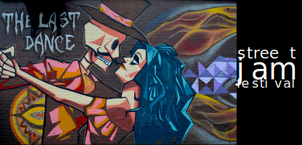

Le 15 octobre 2023, Vevey célèbre les tendances actuelles en matière d'art urbain et de musique, et rassemble une communauté de personnes partageant les mêmes intérêts.
l'événement
Notre événement offre une variété d'activités pour les visiteurs, notamment des démonstrations de skate réalisées par des professionnels, des ateliers de graffiti interactifs, des expositions d'œuvres d'art urbain innovantes et des performances musicales d'artistes locaux et internationaux.
l'objectif
Notre objectif est de créer un espace pour que les artistes de rue et les amateurs de culture urbaine puissent se rencontrer, partager leur savoir-faire et leur passion pour l'art urbain et s'immerger dans une ambiance urbaine unique.
le festival
Notre festival propose également une sélection de stands de restauration proposant une cuisine de rue authentique pour ravir les papilles des visiteurs.